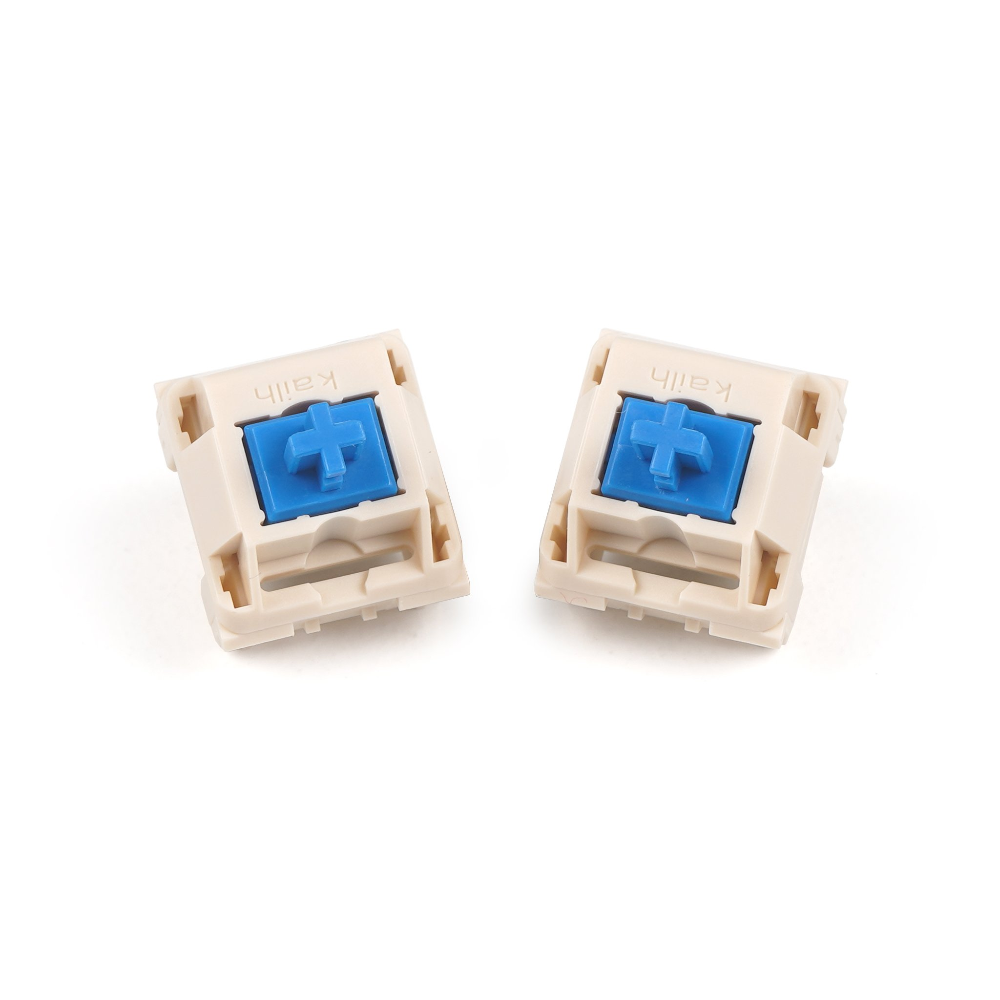

Blueberry switches have a large tactile bump at the top of the keypress. This bump is very pronounced and is a bit too large for my taste. The switch actuates after being pressed for 3mm which is much lower than standard switches (2mm).
Here is a typing test with the Blueberry switch:
Go back